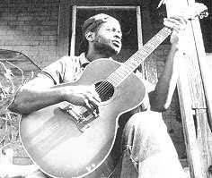
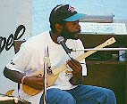

(08.10.1955, Лексингтон, Миссиссиппи - 08.11.1998, Лексингтон, Миссиссиппи.)
Американский певец, гитарист, последний виртуоз диддлий-боу, продолжатель традиции Дельта-блюза.

В последнем десятилетии ХХ века Лонни Питчфорд исполнял блюз аутентично духу и ноте Дельта-блюза, точный возраст которого неизвестен. Как Роберт Джонсон он гениально легко сочетал пальцевую и слайдовую технику игры, и так же естественно он сочитал виртуозность и анархичность игры. С Дельтой его связывала та же плотная сеть родственных, любовных и дружеских взаимоотношений, что сближает почти всех из первых известных нам блюзмэнов Миссиссиппи 20-х и 30-х годов. Песни Роберта Джонсона (Robert Johnson) он учил не с пластинок, а непосредственно от Роберта-младшего Локвуда (Robert Jr. Lockwood): ученика и пасынка Джонсона. Единственный сольный альбом Питчфорда содержит ранее не публиковавшуюся песню Элмора Джеймса (Elmore James), которую ему напела теща - бывшая когда-то подружкой Джеймса. Дух изначального блюза был и в манере жизни, и в лучших записях Питчфорда. Блюзовая мистика покрывает последний год его жизни. Он умер от модного ВИЧ - четыре дня спустя после смерти Юджина Пауэлла (Eugene Powell), второго своего учителя; незадолго до смерти Питчфорд играл для записи на гитаре Элмора Джеймса. Питчфорд похоронен на том же кладбище, где в 1963г. обрел покой Элмор Джеймс. В доме, в котором (как говорит Ханейбой Эдвардз (Honeyboy Edwards)), отравили Роберта Джонсона, Питчфорд снялся для этой фотографии.
 "If I Had Posession Over Judgement Day" Роберта
Джонсона в исполнении Лонни Питчфорда.
Записано 6 декабря 1990 г. в Лексингтоне, в доме его
бабушки на одолженной у кого-то гитаре. Была
полночь, Лонни сыграл для съемочной группы "Deep
Blues" две песни Джонсона. Когда звучал финальный
аккорд последней, зазвонил телефон. Кто-то
сказал: "Да не брюжжи ты!"
"If I Had Posession Over Judgement Day" Роберта
Джонсона в исполнении Лонни Питчфорда.
Записано 6 декабря 1990 г. в Лексингтоне, в доме его
бабушки на одолженной у кого-то гитаре. Была
полночь, Лонни сыграл для съемочной группы "Deep
Blues" две песни Джонсона. Когда звучал финальный
аккорд последней, зазвонил телефон. Кто-то
сказал: "Да не брюжжи ты!"
Как это было в легендарные времена, Питчфорд начал играть музыку на семейных праздниках. Его первым инструментом был самодельный диддлий-боу (diddley-bow), однострунная гитара, американский аналог африканского инструмента. Он мял помидоры в томатный сок, красил полы, зарабатал свою пару-тройку баксов музыкой на местных пикниках с жареной рыбой и в кабаках с живой музыкой - а уж потом стал появляться на фолк- и блюз-фестивалях. Без сомнений, именно эта последовательность придает блюзу нефилармоническую подлинность жизни.Кроме того, как и доисторические блюзмэны, Питчфорд зарабатывал на жизнь, исполняя любую популярную на выпавший момент музыку: в кабаках ему доводилось играть и диско. Питчфорда обнаружил фольклорист Уорт Лонг и привез в Вашингтон, где на его выступления с диддлей-боу блюз-антропологи смотрели с тем же изумлением, с каким просто антропологи знакомились бы в Нью-Йорке с неандертальцем. Понятно, что на Питчфорда набросились документалисты. Его можно увидеть во многих фильмах, из которых выделяются два наиболее значительных: в "Земле, где начался блюз" ("The Land Where The Blues Began") Алана Ломакса (Alan Lomax) он представлен как реликт (а, может, и того пуще - анахронизм); зато Роберт Палмера (Robert Palmer) в фильме "Глубокий блюз" ("Deep Blues") представляет его доказательством, что истинных дух блюза неистребим, пока есть жизнь в Дельте.
Питчфорд гастролировал по Америке, Европе и Австралии, выступал в мажорных залах вроде "Зала славы рок-н-ролла", а так же на крупнейших фолк- и блюзовых фестивалях. Его слайд-гитара звучит в альбоме Джона Кугера Малленкампа (John Cougar Mellencamp) 1996г. В 70-х и 80-х Питчфорд жил в и выступал в Кэнзас-Сити, Чикаго, Каламазу… В последние годы он вернулся в Дельту: в Кларксдейл и родной Лексингтон. Часто зарабатывал на жизнь как плотник, играя по вечерам то блюз под гитару, то в ансамблях музыки госпелл. Он не редко записывался, но остался только один изданный сольный альбом: "All Around Man". В 1997г. Питчфорд начал работу над вторым, но болезнь помешала закончить.
Из статьи Роберта Палмера к альбому "DEEP
BLUES":

"Практически каждый из значительных блюзовых гитаристов, кого я пытал как интервьюер, вспоминал, что свои первые музыкальные опыты проводил на диддлей-боу, самодельном приспособлении, состоящем из одной струны (или проволоки), натянутой на доску (или у стены дома), на котором играют бутылочным горлом или слайдом. Лонни и сейчас продолжает играть на таком инструменте, он создал свой собственный электрический диддлей-боу, на котором он исполняет поразительно развернутые импровизации. А с помощью Роберта-младшего Локвуда, Лонни научился и в совершенстве овладел многомерной, глубоко духовной музыкой самого выдающегося из композиторов Дельты, покойного Роберта Джонсона".соло:
1994: All Around Man (Rooster Blues)
компилляции:
1992 : Roots of Rhythm & Blues - A Tribute to Robert Johnson Era - запись
"Smithsonian Festival of American Folklife.
1992: Deep Blues - музыка из документального фильма Роберта Палмера.
В сети:
http://www.deltaboogie.com/features/lonnie/index.htm - краткая справка
http://www.seattlesquare.com/folklife/pitchford.htm - записи в ram
http://18.23.0.67/issue9901/images/lonniep1.htm - Lonesome Blues в ram
http://www.rounder.com/rounder/catalog/bylabel/rblu/2629/2629.html - альбом "All Around Man"